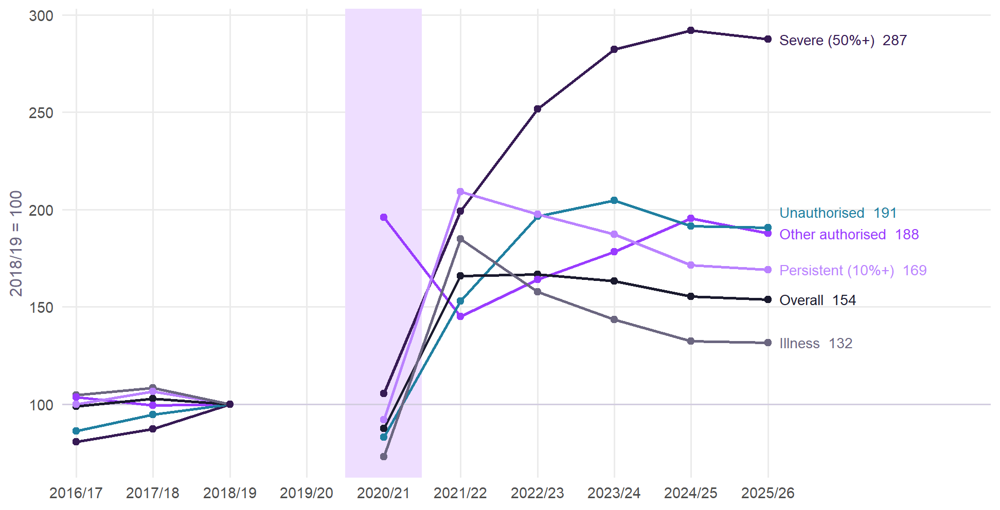
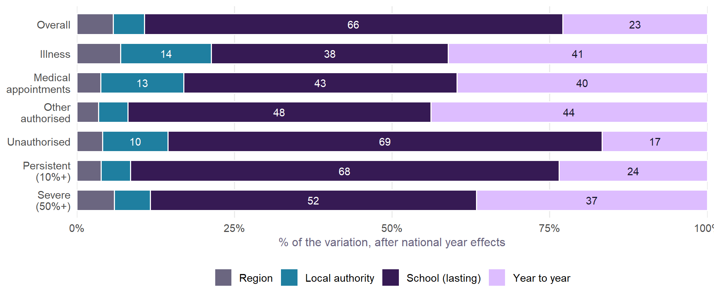
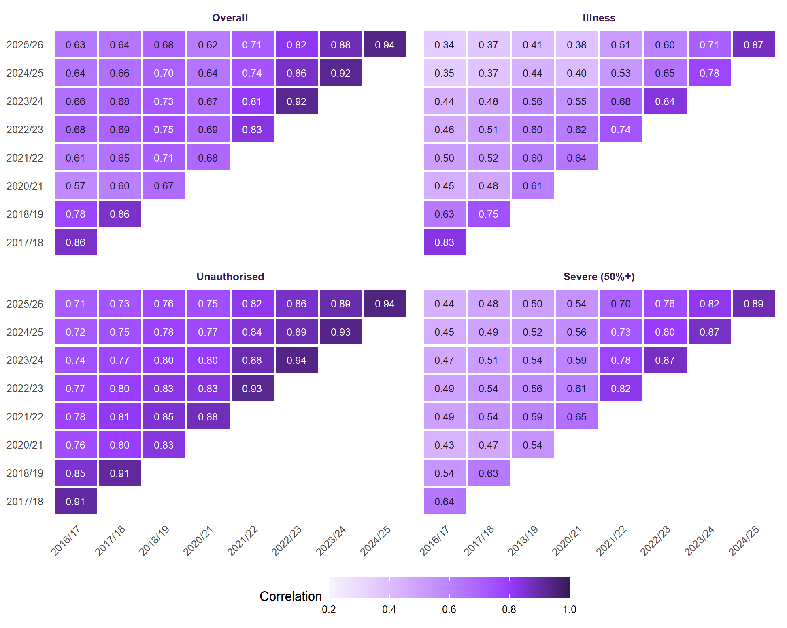
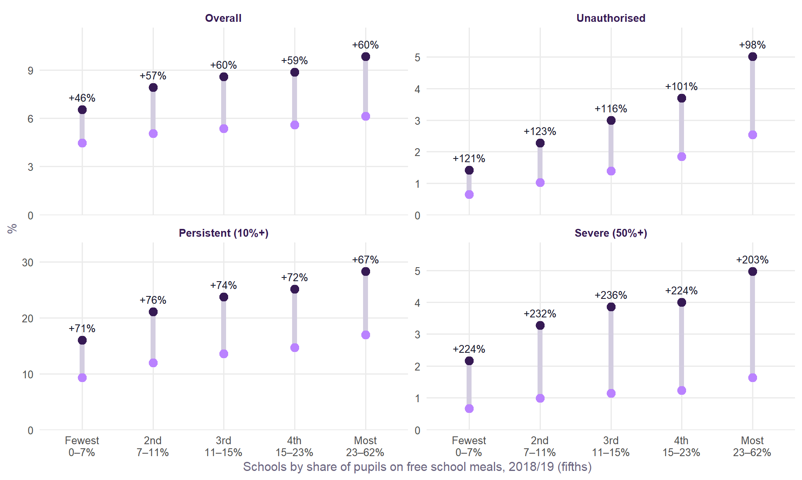
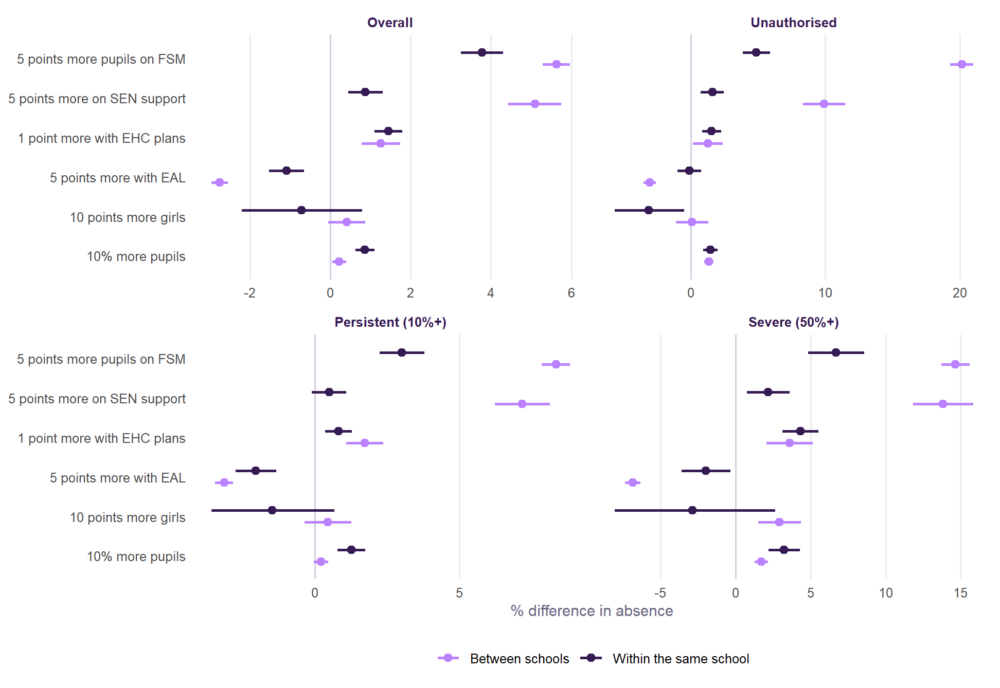
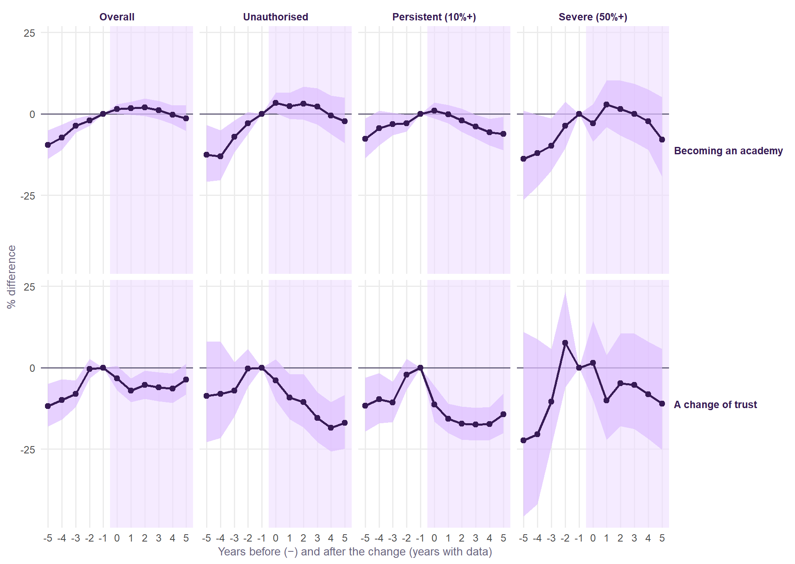

How school absence changes
Following every secondary school in England from 2016/17 to 2025/26: what stays with a school, what moves, and what happens when its intake, status or trust changes.
NoteWork in progress
This page continues the absence analysis. That page compares different schools in one year. This one follows the same schools over ten years. Every figure comes from published school-level data, so every result is about schools, not pupils.
Why follow schools over time
Comparing schools in one year mixes up two things: what a school’s pupils and community bring, and what the school does. Following the same school over time holds constant everything about it that does not change: its neighbourhood, its buildings, its reputation, most of its intake. What is left is change. So this page asks:
- How much of a school’s absence is lasting, and how much moves from year to year?
- Do schools keep their place?
- Who rose most between before the pandemic and now?
- When a school’s own intake changes, does its absence change with it?
- What happens to absence when a school becomes an academy, or moves to a new trust?
The data
- Absence. DfE’s school-level absence for the autumn and spring terms, 2016/17 to 2025/26. It is the one file that covers every year on the same basis, including 2025/26, whose full-year figures are not published until 2027. 2019/20 was not collected. 2020/21 is shown in the trend but left out of every model: in a year of lockdowns, pupils told to stay home were not counted as absent.
- Schools. Every state-funded secondary school: 30,592 school-years, 3,524 schools. A school that becomes an academy, or moves trust, gets a new URN. The 4,271 URNs are joined into schools with GIAS’s one-to-one predecessor and successor links. Mergers, amalgamations and splits end a school’s record.
- Intake. The January school census for 2018/19 and 2021/22 to 2024/25 (the performance tables’ census files) and 2025/26 (the January 2026 school census and SEN files). Earlier years are no longer published in the same form.
Ten years of absence
Absence across the autumn and spring terms rose from 5.2% of sessions in 2018/19 to 8.7% in 2022/23. It has eased only to 8.0% in 2025/26. Illness has fallen most of the way back. Unauthorised and other authorised absence have not. Severe absence, pupils missing half their schooling or more, has risen from 1.2% of pupils to 3.6%, and is still near its peak.
What stays with a school and what moves

- Most absence is lasting. Once the national swing from year to year is taken out, 66% of the variation in overall absence, 69% of unauthorised and 68% of persistent absence is a school’s lasting level. Its region and local authority account for about a tenth; the rest is movement from year to year.
- Illness moves more, and is more about place. Only 38% of the variation in illness is lasting to a school, 41% moves from year to year, and 14% is the local authority. That fits the cross-section, where illness was the kind of absence most tied to place.
- The national swing is large. Year alone accounts for 38% of all the variation in overall absence over the period, and 31% of severe. Any one school’s change from last year is mostly the country’s change.
Do schools keep their place?

From one year to the next, schools barely move: the correlation of overall absence between 2024/25 and 2025/26 is 0.94. Over longer stretches they do. Between 2018/19, before the pandemic, and 2025/26 the correlation is 0.68 for overall absence, 0.76 for unauthorised and only 0.41 for illness.
Put another way, of the fifth of schools with the highest unauthorised absence before the pandemic (2016/17 to 2018/19), 62% are still in the top fifth now (2023/24 to 2025/26). For overall absence it is 54%. If nothing changed, it would be 20%. If nothing moved, 100%. A school’s place is sticky, but it is not fixed: more than a third of the schools with the most absence before the pandemic no longer have.
Before the pandemic and now

| Kind of absence | Schools | 2016/17 to 2018/19 | 2023/24 to 2025/26 | Change (points) | Change (%) |
|---|---|---|---|---|---|
| Overall absence | 3,302 | 5.32 | 8.34 | +3.02 | +57 |
| Illness | 3,302 | 2.93 | 3.84 | +0.91 | +31 |
| Medical appointments | 3,302 | 0.33 | 0.37 | +0.03 | +10 |
| Other authorised | 3,302 | 0.58 | 1.06 | +0.48 | +83 |
| Unauthorised | 3,302 | 1.48 | 3.07 | +1.59 | +108 |
| Persistent absence (10%+) | 3,302 | 13.29 | 22.82 | +9.53 | +72 |
| Severe absence (50%+) | 3,302 | 1.13 | 3.64 | +2.51 | +222 |
- The rise was broadly proportional. Schools with the fewest pupils on free school meals saw overall absence rise by 46%. Schools with the most saw 60%. In percentage points, the gap widened: 2.1 points against 3.7.
- Unauthorised absence doubled almost everywhere, slightly less in the poorest schools in relative terms (+98% against +121%) but by far more in points.
- Severe absence roughly tripled in every fifth, from 0.7% of pupils to 2.2% in the least disadvantaged schools and from 1.6% to 5.0% in the most.
- Illness rose least in the poorest schools (+24% against +35% in the second fifth).
So the pandemic did not reorder schools so much as scale them up. A school’s absence now is best compared with where it was relative to England before, not with its own pre-pandemic figure.
When a school’s own intake changes
The cross-section shows that schools with more pupils on free school meals or SEN support have more absence. That could be because of those pupils, or because of everything else that goes with being that kind of school. Following the same school as its intake changes separates the two. If a school’s absence moves with its own intake, the intake matters directly. If not, the cross-school pattern is mostly about the kind of school and community.

- Between schools, disadvantage goes with far more unauthorised absence than within one. Across schools, five points more pupils on free school meals goes with +20% unauthorised absence. When one school’s own share rises by as much, its unauthorised absence rises by +5%. Most of the cross-school gradient is about the kind of school and community, not the marginal pupil.
- The same holds for SEN support: +10% between schools, +2% within.
- For overall absence the two are closer (+5.6% and +3.8% for FSM), so a school taking more disadvantaged pupils should expect somewhat more absence.
- Intake change explains little of how a school’s absence moves. The changes in intake account for 4.8% of the within-school variation in overall absence, 2.0% of unauthorised and 2.3% of persistent. Intake does not move much within a school (Table 2), and when absence moves, it is mostly something else.
| Characteristic | Between schools | Within a school over time |
|---|---|---|
| Free school meals (%) | 12.60 | 4.91 |
| SEN support (%) | 5.00 | 2.86 |
| EHC plans (%) | 1.88 | 0.93 |
| English as an additional language (%) | 18.17 | 3.12 |
| Girls (%) | 16.19 | 1.86 |
| Size (log pupils) | 0.46 | 0.13 |
The share of pupils on free school meals almost doubled over the period (15.1% in 2018/19, 28.8% in 2025/26), much of it because pupils who became eligible under Universal Credit kept their eligibility. The year effects take out the national rise, but where it rose faster it may not mean more poverty. Leaving out 2025/26, whose intake comes from a different file, makes little difference (see the full results).
Becoming an academy, or changing trust
Two kinds of change give a school a new URN, so they can be dated precisely:
- Becoming an academy. 374 maintained schools converted between 2017/18 and 2025/26 and can be followed either side, compared with schools that were maintained throughout and those that had yet to convert.
- A change of trust. 155 academies moved to a new trust, compared with academies that stayed put.
Each is an event study (Sun and Abraham’s estimator, with school and year effects): how absence moved, relative to similar schools that did not change, in the years before and after. The years count only the years with data, so the pandemic gap is one step.

| Kind | Becoming an academy | Converter academies only | A change of trust |
|---|---|---|---|
| Absence | |||
| Overall absence | +0.8% (-1.2 to +2.9) | +1.5% (-0.9 to +3.9) | -5.5% (-9.0 to -2.0) |
| Illness | -1.0% (-4.2 to +2.3) | +0.4% (-2.7 to +3.5) | +0.9% (-7.4 to +9.9) |
| Other authorised | -4.7% (-9.1 to -0.1) | -0.4% (-5.8 to +5.3) | -12.5% (-19.6 to -4.7) |
| Unauthorised | +1.6% (-2.4 to +5.8) | +2.7% (-1.7 to +7.4) | -12.1% (-18.1 to -5.7) |
| Persistent absence (10%+) | -2.6% (-5.5 to +0.4) | +1.3% (-2.3 to +5.0) | -15.7% (-19.9 to -11.3) |
| Severe absence (50%+) | -1.6% (-8.6 to +6.0) | -0.2% (-8.6 to +8.9) | -6.6% (-17.8 to +6.2) |
| Pupils | |||
| Pupils on roll | -2.6% (-5.0 to -0.2) | – | -6.3% (-13.0 to +0.9) |
| Free school meals (points) | +1.3 (+0.6 to +2.0) | – | +2.7 (+1.4 to +4.0) |
| SEN support (points) | +0.2 (-0.4 to +0.9) | – | -0.6 (-2.2 to +1.1) |
Becoming an academy makes no clear difference. In the years after conversion, overall absence was within 0.8% of schools that stayed maintained (95% interval -1.2% to +2.9%). But the converting schools were already on a different path: their absence was rising relative to schools that stayed maintained in the years before, and that rise stopped. So the honest reading is no visible effect of conversion itself, among schools whose trajectory was already diverging.
A change of trust is followed by lower absence. In the years after a move, unauthorised absence was 12% lower and persistent absence 16% lower, relative to academies that stayed with their trust. Overall absence was 6% lower. Three things to weigh:
- The schools were getting worse first. Absence rose in the two or three years before the move (persistent absence three years before was 11% lower than in the year before), which is often why a school is moved. Some of the fall is recovery. But persistent and unauthorised absence fell well below where they had been three years before the move.
- The pupils did not get easier. The share on free school meals rose by +2.7 points relative to other academies, and the roll changed little.
- Recording may change too. A new trust brings new attendance policies, and how sessions are coded is partly a school’s choice. Other authorised absence also fell, so this is not just unauthorised absence being authorised instead.
What it means
TipFor heads and governors
- Judge your absence against England’s year, not your own last year. The national swing is the largest single thing in any school’s change from one year to the next.
- Compare with where you stood relative to England before the pandemic, not with your pre-pandemic figures. Everyone’s rose, and roughly in proportion.
- A school’s absence is mostly lasting, but not fixed. Two-thirds of the variation is a school’s own level, and the same schools tend to stay high. More than a third of the highest-absence schools before the pandemic are no longer in the top fifth.
- A change in intake is rarely the reason absence moved. Within a school, changes in its pupils explain only a few per cent of changes in absence.
- What happens in the school seems to matter. A change of trust, which usually means new leadership and new attendance policies, is followed by lower unauthorised and persistent absence, even with more disadvantaged pupils. To see who has done it with an intake like yours, Find a twin.
For policy, the same results say that the post-pandemic rise is a national shift, not something concentrated in a few kinds of school, and that structural change (becoming an academy) is not by itself a lever on attendance. What a new trust does might be.
What this cannot tell us
- It is about schools, not pupils. A school’s absence can change because its pupils change, or because the same pupils attend differently. Published data cannot tell these apart.
- Event studies are not experiments. Schools are moved to a new trust for reasons, often falling standards. The comparison schools did not face the same pressures, and the pre-move rise shows it.
- Recording practice varies. Whether a session is coded as illness, authorised or unauthorised is partly a school’s choice, and can change with a new head or trust.
- The intake series is short and its FSM measure shifted. Intake by year is available for six years, and eligibility under Universal Credit raised FSM shares in ways that do not all reflect more poverty.
- Chains break. A school that merges or splits starts a new record, so the most disrupted schools are under-represented.
Next steps
- Each school’s own path, relative to England, on the area pages and in Find a twin’s fact cards.
- Illness or recording? Whether high-illness places, such as Brighton and Hove, record absence differently.
- The severe tail, which has tripled and is not falling, on its own.
- Trusts. Whether particular trusts’ schools move together after joining, which would point to what the trust does.
- Back into value added: absence against intake, by kind, as a candidate for a future version of the model.
The full results
| Kind of absence | Model | Change | % | 95% interval |
|---|---|---|---|---|
| Overall absence | Within | 5 points more pupils on FSM | +3.8 | +3.3 to +4.3 |
| 5 points more on SEN support | +0.9 | +0.4 to +1.3 | ||
| 1 point more with EHC plans | +1.4 | +1.1 to +1.8 | ||
| 5 points more with EAL | -1.1 | -1.5 to -0.7 | ||
| 10 points more girls | -0.7 | -2.2 to +0.8 | ||
| 10% more pupils | +0.9 | +0.6 to +1.1 | ||
| Between | 5 points more pupils on FSM | +5.6 | +5.3 to +6.0 | |
| 5 points more on SEN support | +5.1 | +4.4 to +5.8 | ||
| 1 point more with EHC plans | +1.3 | +0.8 to +1.7 | ||
| 5 points more with EAL | -2.8 | -3.0 to -2.5 | ||
| 10 points more girls | +0.4 | -0.1 to +0.9 | ||
| 10% more pupils | +0.2 | +0.0 to +0.4 | ||
| Illness | Within | 5 points more pupils on FSM | -0.2 | -1.1 to +0.7 |
| 5 points more on SEN support | +0.9 | +0.2 to +1.7 | ||
| 1 point more with EHC plans | +0.7 | +0.1 to +1.2 | ||
| 5 points more with EAL | -2.0 | -2.7 to -1.3 | ||
| 10 points more girls | +2.9 | -0.2 to +6.0 | ||
| 10% more pupils | +0.7 | +0.3 to +1.0 | ||
| Between | 5 points more pupils on FSM | -3.3 | -3.8 to -2.8 | |
| 5 points more on SEN support | +3.3 | +2.5 to +4.1 | ||
| 1 point more with EHC plans | +1.6 | +1.1 to +2.1 | ||
| 5 points more with EAL | -2.4 | -2.7 to -2.0 | ||
| 10 points more girls | +0.7 | +0.3 to +1.2 | ||
| 10% more pupils | -0.2 | -0.4 to -0.1 | ||
| Medical appointments | Within | 5 points more pupils on FSM | +0.0 | -0.6 to +0.7 |
| 5 points more on SEN support | +0.7 | +0.1 to +1.3 | ||
| 1 point more with EHC plans | +1.3 | +0.8 to +1.8 | ||
| 5 points more with EAL | -0.2 | -0.9 to +0.4 | ||
| 10 points more girls | +1.3 | -1.1 to +3.8 | ||
| 10% more pupils | +0.5 | +0.2 to +0.8 | ||
| Between | 5 points more pupils on FSM | -3.3 | -3.7 to -3.0 | |
| 5 points more on SEN support | +0.7 | -0.1 to +1.4 | ||
| 1 point more with EHC plans | +1.8 | +1.5 to +2.2 | ||
| 5 points more with EAL | -0.9 | -1.2 to -0.6 | ||
| 10 points more girls | +1.9 | +1.4 to +2.3 | ||
| 10% more pupils | -0.5 | -0.7 to -0.3 | ||
| Other authorised | Within | 5 points more pupils on FSM | +5.0 | +3.8 to +6.2 |
| 5 points more on SEN support | +1.7 | +0.6 to +2.7 | ||
| 1 point more with EHC plans | +3.6 | +2.7 to +4.5 | ||
| 5 points more with EAL | -1.3 | -2.3 to -0.3 | ||
| 10 points more girls | -0.9 | -4.5 to +2.9 | ||
| 10% more pupils | +1.5 | +1.0 to +2.0 | ||
| Between | 5 points more pupils on FSM | +6.1 | +5.4 to +6.7 | |
| 5 points more on SEN support | +7.1 | +5.9 to +8.4 | ||
| 1 point more with EHC plans | +2.8 | +2.0 to +3.7 | ||
| 5 points more with EAL | -3.7 | -4.1 to -3.4 | ||
| 10 points more girls | -0.1 | -0.9 to +0.7 | ||
| 10% more pupils | +0.0 | -0.3 to +0.3 | ||
| Unauthorised | Within | 5 points more pupils on FSM | +4.9 | +3.9 to +5.9 |
| 5 points more on SEN support | +1.6 | +0.7 to +2.5 | ||
| 1 point more with EHC plans | +1.6 | +0.8 to +2.3 | ||
| 5 points more with EAL | -0.1 | -1.0 to +0.8 | ||
| 10 points more girls | -3.1 | -5.7 to -0.5 | ||
| 10% more pupils | +1.5 | +0.9 to +2.0 | ||
| Between | 5 points more pupils on FSM | +20.2 | +19.3 to +21.0 | |
| 5 points more on SEN support | +9.9 | +8.4 to +11.5 | ||
| 1 point more with EHC plans | +1.3 | +0.2 to +2.4 | ||
| 5 points more with EAL | -3.0 | -3.5 to -2.6 | ||
| 10 points more girls | +0.1 | -1.1 to +1.3 | ||
| 10% more pupils | +1.4 | +1.0 to +1.7 | ||
| Persistent absence (10%+) | Within | 5 points more pupils on FSM | +3.0 | +2.2 to +3.8 |
| 5 points more on SEN support | +0.5 | -0.1 to +1.1 | ||
| 1 point more with EHC plans | +0.8 | +0.4 to +1.3 | ||
| 5 points more with EAL | -2.0 | -2.7 to -1.3 | ||
| 10 points more girls | -1.5 | -3.6 to +0.7 | ||
| 10% more pupils | +1.3 | +0.8 to +1.8 | ||
| Between | 5 points more pupils on FSM | +8.3 | +7.9 to +8.8 | |
| 5 points more on SEN support | +7.2 | +6.2 to +8.1 | ||
| 1 point more with EHC plans | +1.7 | +1.1 to +2.4 | ||
| 5 points more with EAL | -3.1 | -3.5 to -2.8 | ||
| 10 points more girls | +0.4 | -0.4 to +1.3 | ||
| 10% more pupils | +0.2 | -0.0 to +0.5 | ||
| Severe absence (50%+) | Within | 5 points more pupils on FSM | +6.7 | +4.8 to +8.6 |
| 5 points more on SEN support | +2.2 | +0.8 to +3.6 | ||
| 1 point more with EHC plans | +4.3 | +3.1 to +5.5 | ||
| 5 points more with EAL | -2.0 | -3.6 to -0.3 | ||
| 10 points more girls | -2.9 | -8.1 to +2.6 | ||
| 10% more pupils | +3.2 | +2.2 to +4.3 | ||
| Between | 5 points more pupils on FSM | +14.6 | +13.7 to +15.6 | |
| 5 points more on SEN support | +13.8 | +11.8 to +15.8 | ||
| 1 point more with EHC plans | +3.6 | +2.0 to +5.1 | ||
| 5 points more with EAL | -6.9 | -7.4 to -6.3 | ||
| 10 points more girls | +2.9 | +1.5 to +4.3 | ||
| 10% more pupils | +1.7 | +1.3 to +2.1 |
Without 2025/26, overall absence within a school rises +4.0% with five points more FSM (against +3.8% with it), and unauthorised +5.7% (against +4.9%).
| Kind of absence | Characteristic | % per SD | 95% interval |
|---|---|---|---|
| Overall absence | Free school meals (%) | +3.2 | +2.1 to +4.2 |
| SEN support (%) | +2.2 | +1.3 to +3.0 | |
| EHC plans (%) | +0.7 | -0.0 to +1.5 | |
| English as an additional language (%) | -2.2 | -3.1 to -1.3 | |
| Girls (%) | +1.8 | +1.0 to +2.5 | |
| Size (log pupils) | +1.6 | +0.8 to +2.5 | |
| Illness | Free school meals (%) | -4.4 | -6.2 to -2.6 |
| SEN support (%) | +0.2 | -1.0 to +1.5 | |
| EHC plans (%) | +1.1 | +0.1 to +2.1 | |
| English as an additional language (%) | +2.3 | +0.3 to +4.4 | |
| Girls (%) | +1.5 | +0.6 to +2.5 | |
| Size (log pupils) | -1.1 | -2.4 to +0.2 | |
| Medical appointments | Free school meals (%) | +0.5 | -0.9 to +2.0 |
| SEN support (%) | +0.9 | -0.3 to +2.1 | |
| EHC plans (%) | -0.6 | -1.7 to +0.5 | |
| English as an additional language (%) | -1.6 | -3.0 to -0.3 | |
| Girls (%) | +1.1 | +0.1 to +2.1 | |
| Size (log pupils) | +0.8 | -0.4 to +2.0 | |
| Other authorised | Free school meals (%) | +3.6 | +1.5 to +5.8 |
| SEN support (%) | +5.2 | +3.2 to +7.2 | |
| EHC plans (%) | +2.4 | +0.6 to +4.3 | |
| English as an additional language (%) | -6.4 | -8.4 to -4.4 | |
| Girls (%) | +2.5 | +0.8 to +4.2 | |
| Size (log pupils) | +3.4 | +1.4 to +5.4 | |
| Unauthorised | Free school meals (%) | -0.5 | -2.3 to +1.3 |
| SEN support (%) | +2.5 | +0.7 to +4.3 | |
| EHC plans (%) | +0.6 | -0.8 to +2.1 | |
| English as an additional language (%) | -5.0 | -6.7 to -3.4 | |
| Girls (%) | +2.6 | +1.0 to +4.3 | |
| Size (log pupils) | +2.6 | +0.7 to +4.4 | |
| Persistent absence (10%+) | Free school meals (%) | -1.3 | -2.6 to +0.1 |
| SEN support (%) | +1.7 | +0.5 to +2.9 | |
| EHC plans (%) | +0.1 | -0.9 to +1.1 | |
| English as an additional language (%) | +1.2 | -0.3 to +2.7 | |
| Girls (%) | +3.0 | +1.7 to +4.2 | |
| Size (log pupils) | +2.3 | +1.1 to +3.6 | |
| Severe absence (50%+) | Free school meals (%) | +4.5 | +1.8 to +7.3 |
| SEN support (%) | +6.5 | +4.1 to +9.1 | |
| EHC plans (%) | +3.3 | +1.0 to +5.7 | |
| English as an additional language (%) | -9.7 | -12.2 to -7.1 | |
| Girls (%) | +6.9 | +4.4 to +9.5 | |
| Size (log pupils) | +4.1 | +1.4 to +6.9 |
| Study | Kind of absence | Event time | % | 95% interval | Schools |
|---|---|---|---|---|---|
| A change of trust | Overall absence | -5 | -11.8 | -18.1 to -4.9 | 25 |
| -4 | -9.9 | -15.9 to -3.5 | 35 | ||
| -3 | -8.1 | -12.0 to -4.0 | 81 | ||
| -2 | -0.4 | -3.3 to +2.7 | 115 | ||
| -1 | +0.0 | reference | 155 | ||
| 0 | -3.3 | -6.9 to +0.6 | 154 | ||
| 1 | -7.0 | -10.6 to -3.3 | 149 | ||
| 2 | -5.3 | -9.5 to -1.0 | 134 | ||
| 3 | -6.0 | -10.3 to -1.5 | 125 | ||
| 4 | -6.4 | -10.7 to -1.8 | 117 | ||
| 5 | -3.6 | -8.2 to +1.2 | 72 | ||
| Illness | -5 | -4.9 | -14.5 to +5.9 | 25 | |
| -4 | -9.5 | -26.1 to +10.8 | 35 | ||
| -3 | -1.2 | -11.3 to +10.1 | 81 | ||
| -2 | +4.9 | -0.2 to +10.2 | 115 | ||
| -1 | +0.0 | reference | 155 | ||
| 0 | +0.5 | -6.9 to +8.4 | 154 | ||
| 1 | -2.4 | -10.4 to +6.2 | 149 | ||
| 2 | +1.2 | -8.1 to +11.5 | 134 | ||
| 3 | +2.5 | -8.0 to +14.3 | 125 | ||
| 4 | +3.9 | -7.2 to +16.3 | 117 | ||
| 5 | +6.7 | -7.1 to +22.5 | 72 | ||
| Other authorised | -5 | -25.4 | -38.1 to -10.1 | 25 | |
| -4 | -23.1 | -39.3 to -2.7 | 35 | ||
| -3 | -20.5 | -29.4 to -10.5 | 81 | ||
| -2 | -5.0 | -12.1 to +2.6 | 115 | ||
| -1 | +0.0 | reference | 155 | ||
| 0 | -6.4 | -13.6 to +1.5 | 154 | ||
| 1 | -12.9 | -20.5 to -4.5 | 149 | ||
| 2 | -10.5 | -19.4 to -0.6 | 134 | ||
| 3 | -13.6 | -22.5 to -3.7 | 125 | ||
| 4 | -13.9 | -23.5 to -3.2 | 117 | ||
| 5 | -14.7 | -24.6 to -3.6 | 72 | ||
| Unauthorised | -5 | -8.6 | -22.8 to +8.1 | 25 | |
| -4 | -8.0 | -21.6 to +7.9 | 35 | ||
| -3 | -7.0 | -14.9 to +1.7 | 81 | ||
| -2 | -0.3 | -5.9 to +5.7 | 115 | ||
| -1 | +0.0 | reference | 155 | ||
| 0 | -3.9 | -10.1 to +2.6 | 154 | ||
| 1 | -9.2 | -15.8 to -2.1 | 149 | ||
| 2 | -10.5 | -18.3 to -2.0 | 134 | ||
| 3 | -15.5 | -22.8 to -7.5 | 125 | ||
| 4 | -18.4 | -25.6 to -10.5 | 117 | ||
| 5 | -17.0 | -24.8 to -8.3 | 72 | ||
| Persistent absence (10%+) | -5 | -11.7 | -19.6 to -3.0 | 25 | |
| -4 | -9.7 | -17.0 to -1.6 | 35 | ||
| -3 | -10.7 | -16.6 to -4.3 | 81 | ||
| -2 | -2.1 | -6.8 to +2.7 | 115 | ||
| -1 | +0.0 | reference | 155 | ||
| 0 | -11.3 | -16.6 to -5.6 | 154 | ||
| 1 | -15.7 | -20.1 to -11.0 | 149 | ||
| 2 | -17.1 | -22.0 to -12.0 | 134 | ||
| 3 | -17.4 | -22.3 to -12.3 | 125 | ||
| 4 | -17.3 | -22.2 to -12.1 | 117 | ||
| 5 | -14.2 | -20.1 to -8.0 | 72 | ||
| Severe absence (50%+) | -5 | -22.3 | -45.7 to +11.0 | 25 | |
| -4 | -20.5 | -41.8 to +8.7 | 35 | ||
| -3 | -10.4 | -24.0 to +5.8 | 81 | ||
| -2 | +7.7 | -6.1 to +23.4 | 115 | ||
| -1 | +0.0 | reference | 155 | ||
| 0 | +1.5 | -10.0 to +14.4 | 154 | ||
| 1 | -10.1 | -22.1 to +3.8 | 149 | ||
| 2 | -4.8 | -17.9 to +10.4 | 134 | ||
| 3 | -5.3 | -18.8 to +10.5 | 125 | ||
| 4 | -8.1 | -21.8 to +7.9 | 117 | ||
| 5 | -11.1 | -25.3 to +5.7 | 72 | ||
| Becoming an academy | Overall absence | -5 | -9.6 | -13.8 to -5.1 | 77 |
| -4 | -7.3 | -11.1 to -3.3 | 98 | ||
| -3 | -3.7 | -5.8 to -1.5 | 207 | ||
| -2 | -2.0 | -3.6 to -0.4 | 274 | ||
| -1 | +0.0 | reference | 374 | ||
| 0 | +1.4 | -0.0 to +3.0 | 374 | ||
| 1 | +1.7 | -0.3 to +3.7 | 351 | ||
| 2 | +2.0 | -0.7 to +4.7 | 325 | ||
| 3 | +1.1 | -1.6 to +3.9 | 294 | ||
| 4 | -0.3 | -3.2 to +2.6 | 272 | ||
| 5 | -1.5 | -5.3 to +2.6 | 164 | ||
| Illness | -5 | -5.0 | -10.0 to +0.3 | 77 | |
| -4 | -2.3 | -7.4 to +3.1 | 98 | ||
| -3 | +1.9 | -2.1 to +6.0 | 207 | ||
| -2 | +0.5 | -2.2 to +3.4 | 274 | ||
| -1 | +0.0 | reference | 374 | ||
| 0 | +1.0 | -1.5 to +3.7 | 374 | ||
| 1 | +0.4 | -2.9 to +3.8 | 351 | ||
| 2 | -1.3 | -5.5 to +3.1 | 325 | ||
| 3 | -2.4 | -6.8 to +2.3 | 294 | ||
| 4 | -1.6 | -6.1 to +3.2 | 272 | ||
| 5 | -1.9 | -7.4 to +3.9 | 164 | ||
| Other authorised | -5 | -20.0 | -29.5 to -9.3 | 77 | |
| -4 | -12.4 | -21.1 to -2.8 | 98 | ||
| -3 | -8.7 | -13.5 to -3.6 | 207 | ||
| -2 | -4.5 | -8.2 to -0.8 | 274 | ||
| -1 | +0.0 | reference | 374 | ||
| 0 | -3.3 | -6.7 to +0.1 | 374 | ||
| 1 | -4.0 | -8.5 to +0.7 | 351 | ||
| 2 | -3.1 | -9.1 to +3.2 | 325 | ||
| 3 | -3.4 | -9.4 to +3.0 | 294 | ||
| 4 | -6.4 | -12.6 to +0.2 | 272 | ||
| 5 | -10.5 | -18.1 to -2.1 | 164 | ||
| Unauthorised | -5 | -12.5 | -20.8 to -3.4 | 77 | |
| -4 | -13.1 | -20.4 to -5.0 | 98 | ||
| -3 | -7.0 | -11.8 to -2.0 | 207 | ||
| -2 | -2.9 | -6.2 to +0.6 | 274 | ||
| -1 | +0.0 | reference | 374 | ||
| 0 | +3.3 | +0.3 to +6.4 | 374 | ||
| 1 | +2.3 | -1.6 to +6.4 | 351 | ||
| 2 | +3.1 | -1.8 to +8.3 | 325 | ||
| 3 | +2.2 | -3.2 to +7.9 | 294 | ||
| 4 | -0.5 | -6.2 to +5.6 | 272 | ||
| 5 | -2.3 | -9.0 to +4.9 | 164 | ||
| Persistent absence (10%+) | -5 | -7.7 | -13.6 to -1.4 | 77 | |
| -4 | -4.5 | -9.6 to +1.0 | 98 | ||
| -3 | -3.2 | -6.5 to +0.3 | 207 | ||
| -2 | -2.9 | -5.4 to -0.3 | 274 | ||
| -1 | +0.0 | reference | 374 | ||
| 0 | +1.0 | -1.5 to +3.5 | 374 | ||
| 1 | -0.1 | -2.9 to +2.7 | 351 | ||
| 2 | -2.0 | -5.5 to +1.6 | 325 | ||
| 3 | -4.0 | -7.6 to -0.2 | 294 | ||
| 4 | -5.7 | -9.6 to -1.5 | 272 | ||
| 5 | -6.2 | -11.2 to -0.9 | 164 | ||
| Severe absence (50%+) | -5 | -13.8 | -26.4 to +1.0 | 77 | |
| -4 | -12.0 | -22.3 to -0.3 | 98 | ||
| -3 | -9.8 | -17.5 to -1.4 | 207 | ||
| -2 | -3.7 | -10.6 to +3.7 | 274 | ||
| -1 | +0.0 | reference | 374 | ||
| 0 | -3.0 | -8.5 to +2.9 | 374 | ||
| 1 | +2.9 | -4.0 to +10.2 | 351 | ||
| 2 | +1.5 | -6.7 to +10.3 | 325 | ||
| 3 | -0.1 | -8.6 to +9.3 | 294 | ||
| 4 | -2.3 | -11.1 to +7.4 | 272 | ||
| 5 | -7.9 | -19.3 to +5.1 | 164 |
| Kind of absence | Region | Local authority | School (lasting) | Year to year | National year effects (of all) |
|---|---|---|---|---|---|
| Overall absence | 6% | 5% | 66% | 23% | 38% |
| Illness | 7% | 14% | 38% | 41% | 22% |
| Medical appointments | 4% | 13% | 43% | 40% | 1% |
| Other authorised | 3% | 5% | 48% | 44% | 17% |
| Unauthorised | 4% | 10% | 69% | 17% | 18% |
| Persistent absence (10%+) | 4% | 5% | 68% | 24% | 33% |
| Severe absence (50%+) | 6% | 6% | 52% | 37% | 31% |
Method. Absence is modelled as log(% + 0.1), so effects read as % differences. The variance shares come from lme4 models with year fixed effects and random intercepts for region, local authority and school. The within and between models are fixest regressions of log absence on the intake with school and year fixed effects (within) or year effects only (between). The event studies use fixest::sunab, which estimates each cohort’s path separately and averages, avoiding the bias of a single two-way fixed-effects estimate when changes are staggered; the reference is the year before the change, and the comparison schools are those that did not change in the period plus those yet to. A change is dated by the new URN’s opening date. Built by R/09_absence_change.R.